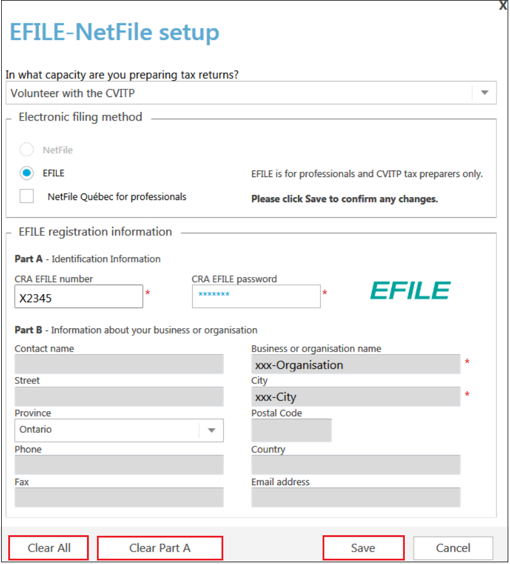
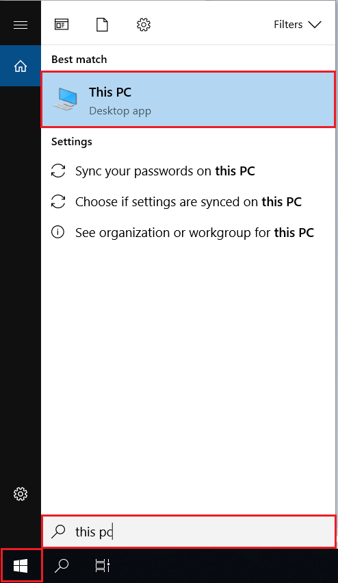
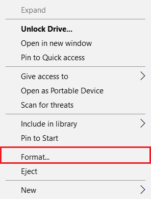
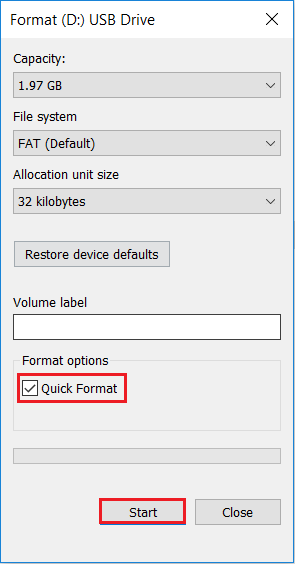

Returning and clearing information
On this page
- Provide the individual a copy of their tax return and forms
- Return all documentation to the individual
- Erase all information
Provide the individual a copy of their tax return and forms
Although the CRA encourages electronic filing, it also recognizes that you may need to provide specific pages or a copy of the tax return to an individual. In these situations, you can either save them as a password protected PDF and send via email or print them for the individual. Refer to Finalizing the tax return under UFile overview.
If you print tax returns or other documents containing the individual's information using a shared printer, ensure that you pick them up promptly. Do not leave them on the printer for others to find.
Return all documentation to the individual
Do not keep any of the individual’s documents (paper or electronic). This includes the completed TIS60 as well as any calculations or notes you might have made.
Erase all information
If you work on a computer or use a printer that you share with other volunteers within your organization, be sure you clear all of your user information at the end of your shift.
- Go to EFILE-Netfile setup in settings
- Click Clear Part A to remove information in Part A - Identification Information
- Click Save
EFILE-NetFile setup

Text version of the screenshot
EFILE-NetFile setup screen
Clear All button is highlighted
Clear Part A button is highlighted
Save button is highlighted
When you select Clear Part A, information about the business/organization will still remain in Part B. If you need to delete all information, including the organization, click Clear All and Save.
If it was necessary to save the return, be sure to format your USB flash drive no later than 48 hours after the CRA accepts the return. Formatting it will erase all of the data. To format your USB flash drive, follow the steps:
1. Connect the USB flash drive to your computer
2. Click the Windows icon, search, and select This PC

Text version of the screenshot
Computer screen
This PC is highlighted
3. In the displayed window, find the name of the USB flash drive that you would like to format under the Devices and drives section
4. Right-click on the USB flash drive and select Format from the pop-up menu

Text version of the screenshot
Computer menu
Unlock Drive option
Format option is highlighted
5. Select Quick Format option and then Start to format the drive

Text version of the screenshot
Format sub-menu
Quick format is checked and highlighted
Start button is highlighted
6. Select OK to confirm that you will erase all data on the drive
Note
You do not have to save the tax return to EFILE or print it. This step is only necessary if you had to save the tax return.